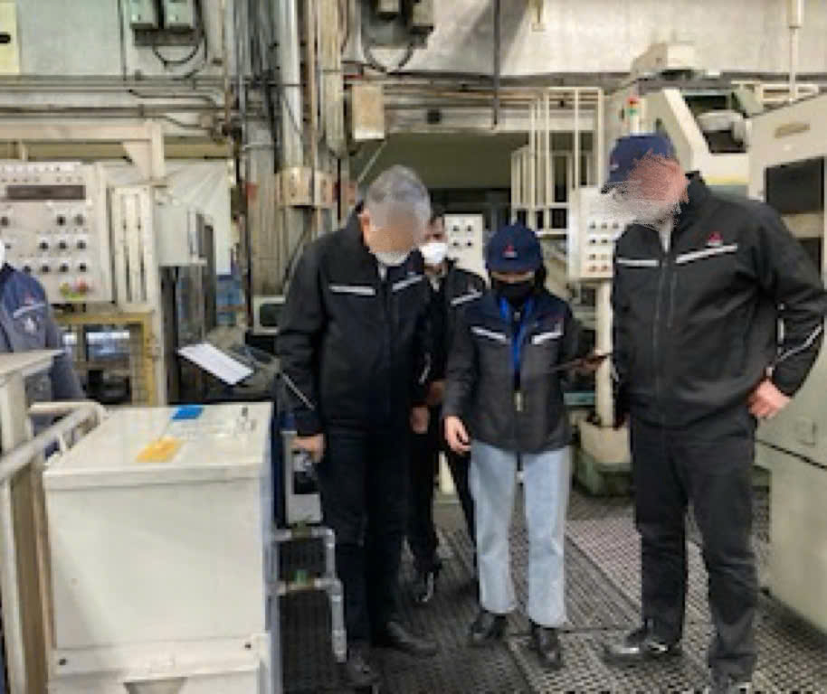
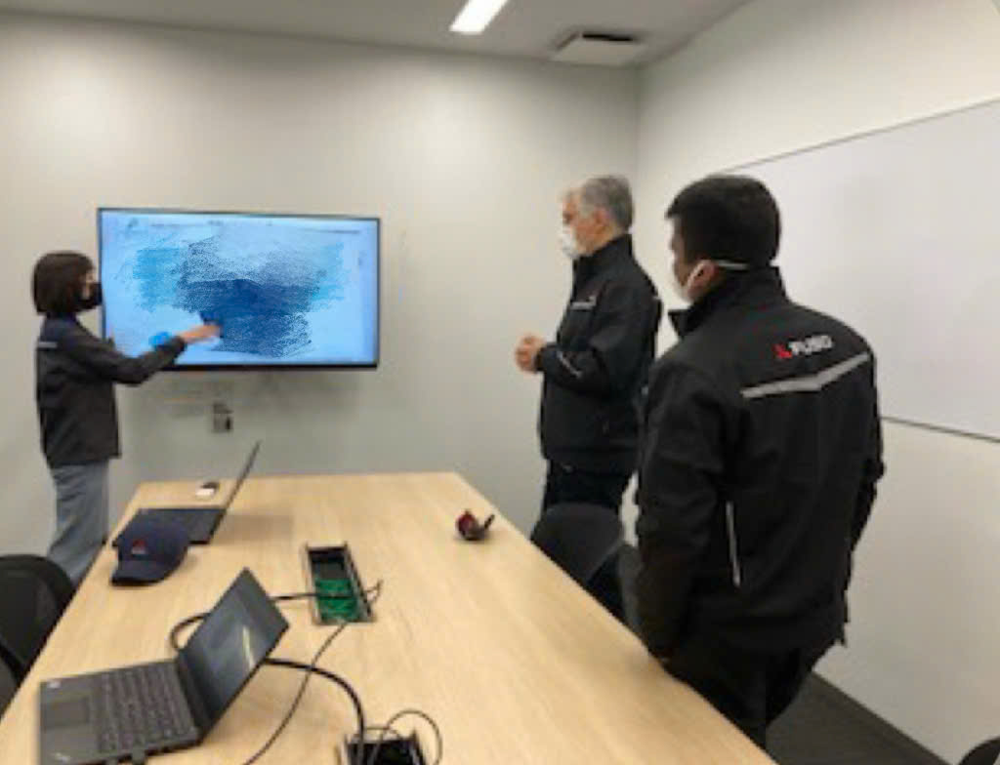
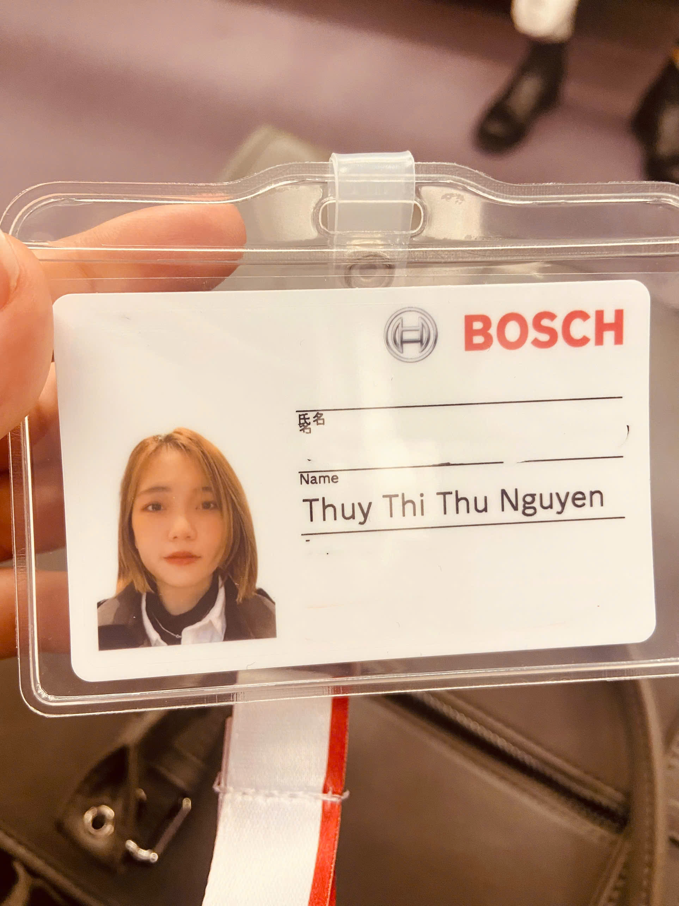
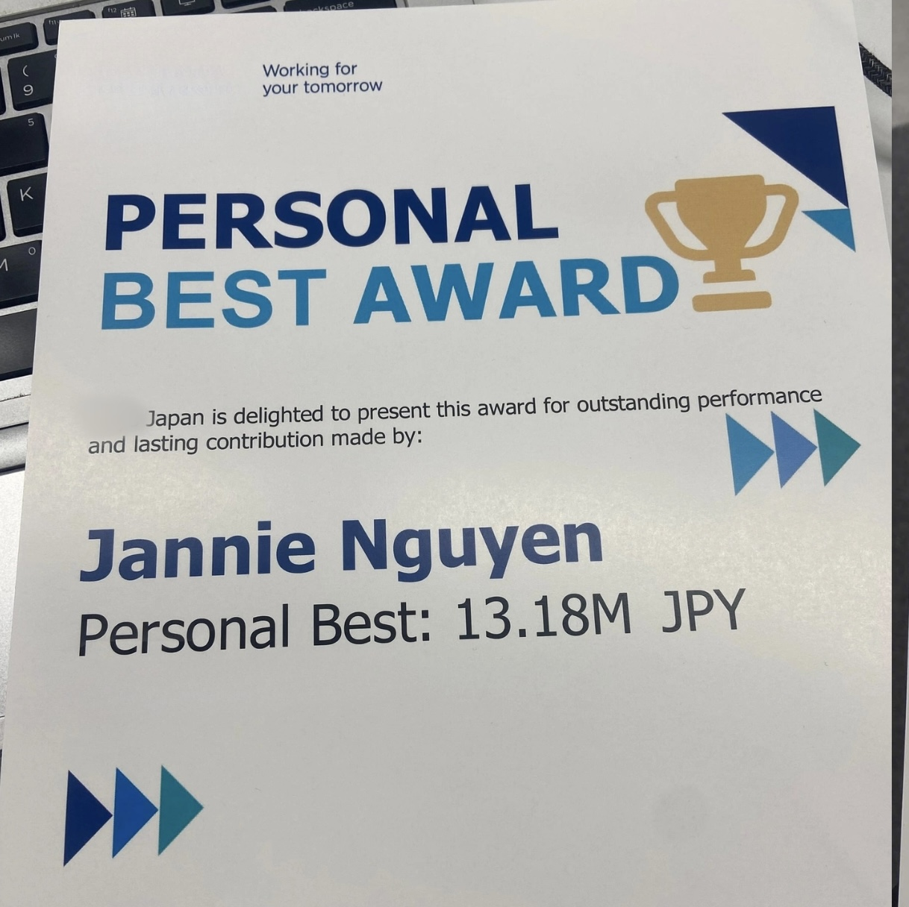
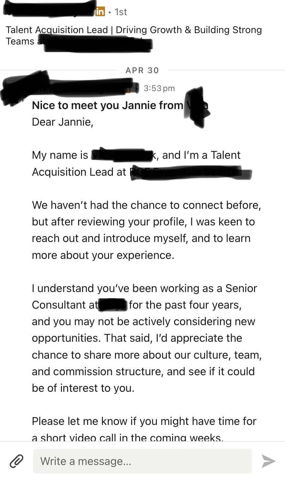
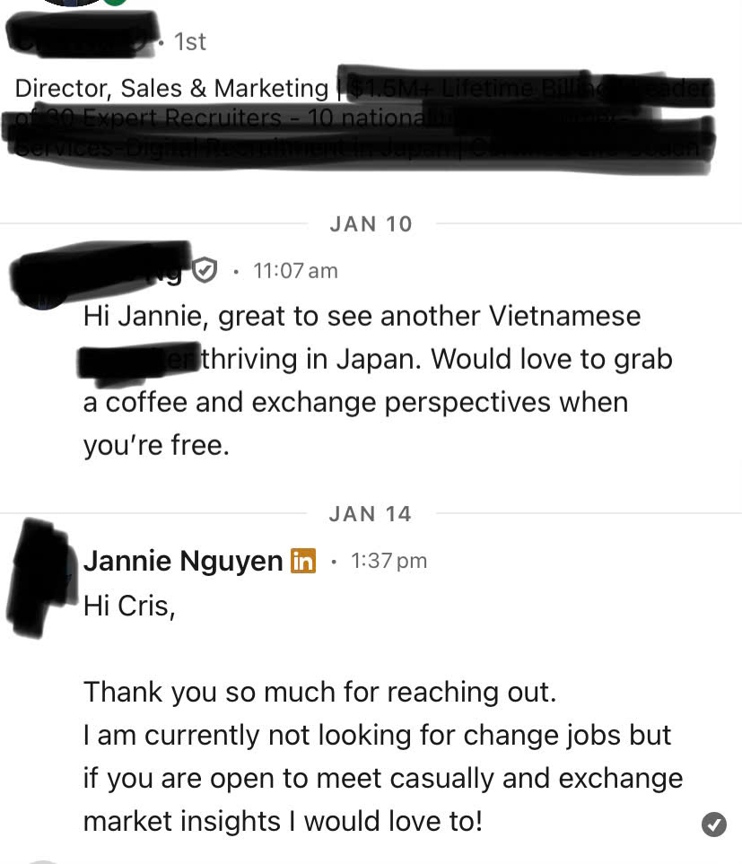
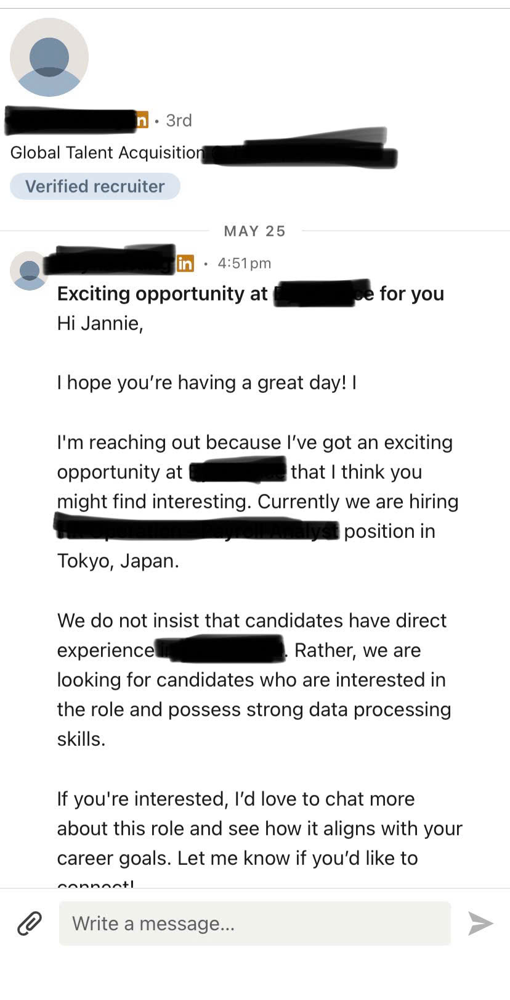
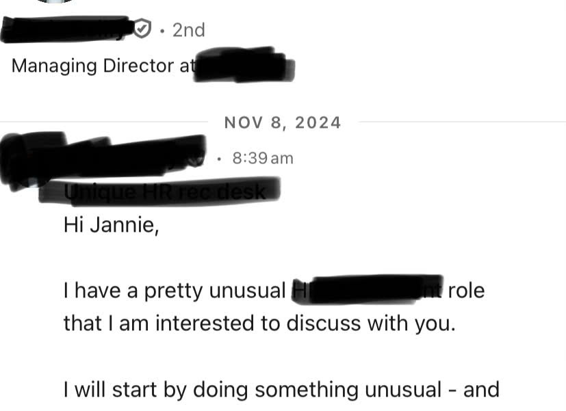

Một công ty lớn, lương tốt, phúc lợi tốt chủ động mời bạn về, ngay khi bạn còn là sinh viên. Kể cả khi trường không top, không thành tích, và trong CV gần như chưa có gì. Bí mật không nằm ở tấm bằng, mà ở một thứ bạn bắt đầu chuẩn bị được ngay từ trên ghế nhà trường: một bộ hồ sơ.
Bạn đổ hàng trăm giờ vào việc làm thêm, nhưng cuối tháng tiền tiêu là hết, và không việc nào ở lại trong CV quá một dòng. Tiền thì tiêu hết. Giờ thì trôi hết. Còn hồ sơ để đi xin việc thì vẫn đứng yên.
Trong khi đó, bạn bè quanh bạn lần lượt có thực tập, có chỗ nhận, có hướng đi. Còn bạn chỉ có một tấm bằng sắp cầm, và một nỗi lo lớn dần về cái ngày ra trường.
Nói thẳng: đó không phải lỗi của bạn. Suốt bao năm, người ta bảo bạn cứ học cho tốt cái đã, chuyện việc làm để ra trường rồi tính. Không một ai ở trường dạy bạn rằng một công việc tốt phải được chuẩn bị từ trước. Bạn đã làm đúng mọi thứ được dặn, nên bạn chẳng có gì để tự trách.
Nhưng sâu trong lòng, có lẽ bạn đã ngờ ngợ: tấm bằng thôi hình như không đủ. Bạn từng thấy những người học giỏi hơn mình vẫn chật vật xin việc. Linh cảm đó của bạn đúng.
Hiện tại, mình làm trong ngành nhân sự cho các tập đoàn lớn trên thế giới, và được xếp TOP 1 HR Consultant của khu vực châu Á. Mỗi ngày mình ngồi ở phía bên kia bàn tuyển dụng, cùng bàn với các giám đốc của những tập đoàn lớn trên thế giới, tham gia quyết định ai được nhận và ai bị loại. Nhưng mình không sinh ra ở đó.
Mình là một du học sinh, học bổng toàn phần đại học Tokyo. Mình đi làm thêm để trang trải, và mình từng tin chắc: chỉ cần học cho xong, cứ thế bốn năm, ra trường ắt sẽ có việc.
Rồi Covid tới. Chỗ làm thêm của mình đóng cửa. Mình mất việc, mà thật ra đó cũng chỉ là một công việc làm thêm. Điều đáng sợ đến sau đó.
Mình bắt đầu đi rải hồ sơ. Hơn 50 bộ. Mình xin cả một chân giúp việc, công việc mà mình từng nghĩ mình sẽ không bao giờ phải đi xin. Vậy mà cũng không một nơi nào nhận. Có nơi còn từ chối thẳng vì mình "còn đi học".
Đêm đó đổi hẳn cách mình sống. Mình thôi đi kiếm tiền, và bắt đầu đi kiếm bằng chứng. Mỗi giờ rảnh, thay vì đổi lấy đồng lương tiêu hết trong tháng, mình lặng lẽ đắp nó vào hồ sơ của mình.
Năm hai, mình vào Mitsubishi Fuso, và làm tới mức sếp đề nghị giữ mình lại làm nhân viên chính thức sau tốt nghiệp. Bosch từng loại mình vì mình không làm đủ 40 giờ một tuần, rồi phá lệ để nhận mình làm thực tập sinh đầu tiên với hợp đồng 20 giờ. Cuối năm ba, một công ty top trong ngành gửi mình offer chính thức, sớm nguyên một năm trước ngày mình tốt nghiệp. Mình bước ra khỏi trường không phải đi xin việc. Mình được chọn việc.

[ẢNH]
[ẢNH]
[ẢNH]Và đây là điều ít ai nói với bạn: cái offer đầu tiên chỉ là bàn đạp. Một bộ hồ sơ tốt không lớn thêm mỗi năm một chút, nó nhân lên theo cấp số nhân. Bộ hồ sơ mình đắp từ thời sinh viên cứ thế đưa mình đi xa:

[ẢNH]Và đây là điều mình muốn bạn nhìn thẳng vào. Hôm nay mình không còn đi xin việc nữa. Chính các nhà tuyển dụng và giám đốc của những tập đoàn lớn tự tìm tới mình, gửi lời mời mỗi tháng, dù mình chưa đụng vào CV từ năm ba:

[ẢNH]
[ẢNH]
[ẢNH]
[ẢNH]Mình kể hết chuyện này không phải để khoe. Mình kể để bạn thấy: cuộc sống mình đang có hôm nay, một cuộc sống tự do, tài chính ổn định, được đi đây đi đó và tự chọn cách mình sống, đều bắt đầu từ một quyết định rất nhỏ hồi còn là sinh viên. Đắp hồ sơ, thay vì chỉ bán giờ.
Giờ, ngồi ở ghế người tuyển dụng, mình hiểu vì sao chuyện đó xảy ra: công ty không tuyển tấm bằng đẹp nhất, họ tuyển người có bằng chứng làm được việc. Bằng chứng đó có tên là hồ sơ. Và thời điểm dễ nhất, rẻ nhất để bắt đầu đắp nó, là ngay bây giờ, khi bạn còn là sinh viên.
Một bộ hồ sơ khiến công ty nước ngoài chủ động mời bạn, ngay khi bạn còn là sinh viên, trước cả khi cầm bằng.
Một tài sản tự lớn lên theo năm tháng, thay vì những giờ làm thêm tiêu sạch mỗi cuối tháng.
Cơ hội lớn nhất của cả sự nghiệp mở ra đúng lúc bạn còn là sinh viên, qua các luồng chỉ dành cho sinh viên: thực tập, management trainee, early-career. Số liệu độc lập xác nhận điều đó.
Một lớp hồ sơ sống lâu hơn cả tấm bằng của bạn. Nó vẫn đi mời việc về cho bạn rất lâu sau khi bạn ngừng đi xin. Đó là lý do cùng một buổi tối, người đắp hồ sơ và người chỉ bán giờ sẽ ở hai thế giới khác nhau sau bốn năm.
Bạn biết tấm bằng không tự đẻ ra chỗ nhận. Bạn vẫn còn thời gian, và bạn không muốn phí nó.
Ngày tốt nghiệp tới gần mà bạn chưa có gì đặt lên bàn nhà tuyển dụng. Bạn cần một lộ trình kịp, ngay bây giờ.
Bạn muốn những năm này đổi thành một chỗ đứng thật, không chỉ thành một tấm bằng và một cái hạn visa.
Những lời khuyên đó không biết bạn là ai. Bạn cần ai đó ngồi xuống với chính hồ sơ của bạn.
Từ tất cả những gì mình đi qua, kinh nghiệm đi xin việc, kinh nghiệm tự đắp hồ sơ, và giờ là kinh nghiệm ngồi ghế tuyển dụng, mình đúc kết thành một lộ trình gọn trong 3 buổi. Để giúp bạn có một offer tốt từ một công ty tốt, ngay khi còn ngồi trên ghế nhà trường, kể cả khi bạn không học trường top và trong CV gần như chưa có gì.
Đây không phải một khoá luyện CV. CV chỉ là phần bề nổi. Đây là cách xây một bộ hồ sơ năng lực khiến nhà tuyển dụng khao khát chọn bạn, thứ khác hẳn những mẫu CV đại trà ngoài kia, và đáng giá hơn cả một tấm bằng.
Công ty nước ngoài thật sự cần gì ở một sinh viên, cách định vị con người bạn trong mắt họ, và trọn bí mật lộ trình mình đã dùng để xây hồ sơ từ thời sinh viên.
Dựng CV theo từng vị trí, trang LinkedIn thu hút nhà tuyển dụng, kế hoạch hồ sơ, và bộ luyện phỏng vấn cá nhân hoá. Bộ công cụ làm sẵn phần nặng, bạn giữ dùng mãi.
Chỉ cho người đã thực hành và có tiến triển. Mình ngồi xuống gỡ đúng chỗ bạn đang mắc.
Một công ty lớn, cái tên mà bạn từng nghĩ chỉ dành cho người khác. Mức lương đủ để bạn tự lo cho mình và bắt đầu đỡ đần bố mẹ. Phúc lợi tốt, môi trường quốc tế, những đồng nghiệp giỏi mà bạn được học mỗi ngày. Và điều ngọt nhất: chính họ chọn bạn, khi bạn còn chưa ra trường.
Để tới được đó, bạn rời khoá với:
AI skill tìm ra thứ bạn đang có đáng đặt vào hồ sơ.
AI skill chỉ đúng công ty đang cần thứ bạn có, để nhắm trúng.
Trang LinkedIn thu hút nhà tuyển dụng, kèm cách nhắn chủ động.
AI skill may riêng một bản CV cho mỗi vị trí bạn apply.
Nạp hồ sơ và tên công ty, nó sinh đúng bộ câu hỏi và đáp án mẫu may riêng cho bạn, dựa trên kinh nghiệm mình ngồi phỏng vấn sinh viên. Bạn bước vào phòng đã tập đúng những câu sẽ gặp.
Buổi gỡ vướng trực tiếp, chỉ cho người đã thực hành.
| Buổi 1 · Lý thuyết (thị trường, lợi thế, định vị, lộ trình hồ sơ) | 1.500k |
| Buổi 2 · Thực hành (hồ sơ, CV, LinkedIn, bộ phỏng vấn) | 2.000k |
| Bonus 01 · Khám Phá Lợi Thế Riêng | 600k |
| Bonus 02 · Định Vị Thị Trường | 600k |
| Bonus 03 · LinkedIn & Cold DM | 500k |
| Bonus 04 · Tạo CV Theo Vị Trí | 700k |
| Bonus 05 · Luyện Phỏng Vấn Cá Nhân Hoá | 1.200k |
| Bonus 06 · Buổi 3 Q&A sau 3 tháng | 900k |
| Tổng giá trị | 8.000k |
| Pre-order của bạn | 1.999k |
Buổi 1 là trọn phần lý thuyết. Nghe hết Buổi 1, nếu bạn thấy khoá không đúng cho mình, bạn lấy lại tiền ngay lập tức, không cần giải thích một câu nào. Bạn không phải tin bọn mình trước.
Bọn mình làm vậy vì biết với nhiều bạn, đây có thể là tiền bố mẹ, hoặc khoản dành dụm không nhỏ của một sinh viên. Nên rủi ro phải nằm ở phía bọn mình, không phải phía bạn.
Buổi chiều đó bắt đầu được từ hôm nay, khi bạn còn là sinh viên.
Đại học là giai đoạn rẻ nhất đời bạn để chuẩn bị cho một công việc tốt. Mỗi tháng trôi qua chỉ để bán giờ lấy tiền là một tháng hồ sơ đứng yên, và cánh cửa dành cho sinh viên sẽ khép lại đúng ngày bạn tốt nghiệp. Bắt đầu ngay bây giờ, khi bạn còn là sinh viên.
Một bộ hồ sơ chuẩn bị từ thời sinh viên tự đi mời việc về cho bạn nhiều năm. Nhưng nó chỉ bắt đầu được, khi bạn còn là sinh viên.